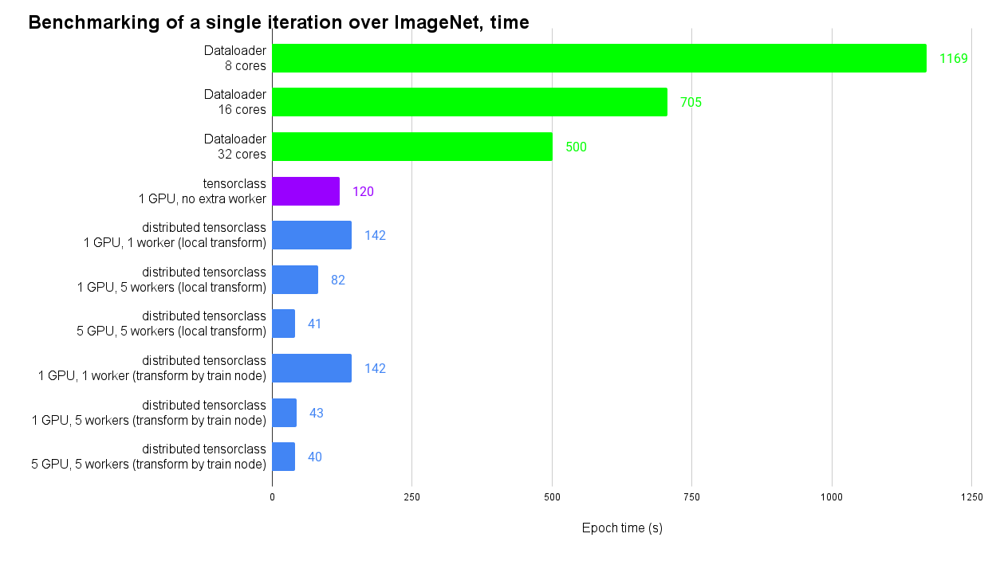
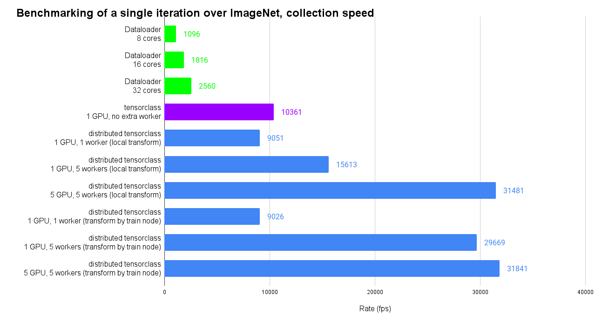

Note
Go to the end to download the full example code.
Batched data loading with tensorclasses#
A torchvision image pipeline opens, decodes, and transforms each image
file again at every epoch, one image at a time. This tutorial stores the
images once in the memory-mapped fields of a TensorClass,
then reads and transforms whole batches. A memory-mapped tensor is a tensor
whose values are stored in a file and read through the page cache of the
operating system. This tutorial is for readers who train from a folder of
image files.
What you will learn:
How to write a
TensorClassthat loads a dataset intoMemoryMappedTensorfields.How to store images as
uint8and normalize them only when a batch is loaded.How to apply random crops and flips to a whole batch with a custom
collate_fn.How to compare the loading rate with a regular
torchvisionpipeline.
Before you start, read Devices and memory-mapped tensors for memory-mapped tensors and TensorClass for tensorclasses.
The tutorial loads the dataset once into memory-mapped tensors and applies the deterministic transforms (resize and center crop) at that time. During training, the data loader reads whole batches from the memory-mapped tensors instead of single image files. It applies the random transforms (crop and flip) and the normalization to each batch, on the device.
The dataset is the subset of ImageNet used in the PyTorch transfer learning tutorial. At the end of the page, two charts show the results of the same approach on the full ImageNet dataset.
Note
Download hymenoptera_data.zip
and extract it into data/, so that the images are in
data/hymenoptera_data.
Note
The regular data loaders below use NUM_WORKERS worker processes. On
macOS and Windows, worker processes start with the spawn method, which
imports the script again in each worker. If you run this file as a script
on these systems, put the code under if __name__ == "__main__":, or set
the environment variable NUM_WORKERS=0.
import os
import time
from pathlib import Path
import torch
import torch.nn as nn
from tensordict import MemoryMappedTensor, TensorClass
from torch.utils.data import DataLoader
from torchvision import datasets, transforms
NUM_WORKERS = int(os.environ.get("NUM_WORKERS", "4"))
device = "cuda:0" if torch.cuda.is_available() else "cpu"
print(f"Using device: {device}")
Using device: cpu
Transforms#
First, define the transforms of the regular torchvision pipeline. The
train transform has random components, so that the model sees a different
crop and flip of each image at each epoch.
train_transform = transforms.Compose(
[
transforms.RandomResizedCrop(224),
transforms.RandomHorizontalFlip(),
transforms.ToTensor(),
transforms.Normalize([0.485, 0.456, 0.406], [0.229, 0.224, 0.225]),
]
)
val_transform = transforms.Compose(
[
transforms.Resize(256),
transforms.CenterCrop(224),
transforms.ToTensor(),
transforms.Normalize([0.485, 0.456, 0.406], [0.229, 0.224, 0.225]),
]
)
torchvision.datasets.ImageFolder reads the images from disk and applies
these transforms to one image at a time.
data_dir = Path("data") / "hymenoptera_data/"
train_data = datasets.ImageFolder(root=data_dir / "train", transform=train_transform)
val_data = datasets.ImageFolder(root=data_dir / "val", transform=val_transform)
The memory-mapped tensors get their data from two other datasets, which
apply only the deterministic transforms. PILToTensor keeps the pixel
values as uint8 integers between 0 and 255. A uint8 image takes a
quarter of the space of a float32 image.
The raw train dataset resizes each image to 256 x 256 pixels. The random crop to 224 x 224 pixels comes later, at load time.
The raw val dataset applies the full val transform except the normalization: resize, then center crop to 224 x 224 pixels.
train_data_raw = datasets.ImageFolder(
root=data_dir / "train",
transform=transforms.Compose(
[transforms.Resize((256, 256)), transforms.PILToTensor()]
),
)
val_data_raw = datasets.ImageFolder(
root=data_dir / "val",
transform=transforms.Compose(
[
transforms.Resize(256),
transforms.CenterCrop(224),
transforms.PILToTensor(),
]
),
)
Batched transforms#
The tensorclass data loader reads a batch of images at a time, so the
transforms below work on a batch. First, a normalization that converts the
uint8 values to normalized float32 values.
Next, two transforms that flip and crop each image of the batch at random.
class RandomHFlip(nn.Module):
def forward(self, x: torch.Tensor):
idx = (
torch.zeros(*x.shape[:-3], 1, 1, 1, device=x.device, dtype=torch.bool)
.bernoulli_()
.expand_as(x)
)
return x.masked_fill(idx, 0.0) + x.masked_fill(~idx, 0.0).flip(-1)
class RandomCrop(nn.Module):
def __init__(self, w, h):
super().__init__()
self.w = w
self.h = h
def forward(self, x):
batch = x.shape[:-3]
index0 = torch.randint(x.shape[-2] - self.h, (*batch, 1), device=x.device)
index0 = index0 + torch.arange(self.h, device=x.device)
index0 = (
index0.unsqueeze(1).unsqueeze(-1).expand((*batch, 3, self.h, x.shape[-1]))
)
index1 = torch.randint(x.shape[-1] - self.w, (*batch, 1), device=x.device)
index1 = index1 + torch.arange(self.w, device=x.device)
index1 = index1.unsqueeze(1).unsqueeze(-2).expand((*batch, 3, self.h, self.w))
return x.gather(-2, index0).gather(-1, index1)
The normalization uses the mean and standard deviation of the Normalize
transforms above, multiplied by 255 because the stored values are between 0
and 255. The train batches are normalized, then cropped and flipped. The val
batches are only normalized.
normalize = InvAffine(
loc=torch.tensor([0.485, 0.456, 0.406], device=device).view(3, 1, 1) * 255,
scale=torch.tensor([0.229, 0.224, 0.225], device=device).view(3, 1, 1) * 255,
)
train_collate_transform = nn.Sequential(
normalize,
RandomCrop(224, 224),
RandomHFlip(),
)
Representing data with a TensorClass#
A tensorclass is the class form of a tensordict: a dataclass whose fields
are tensors. Like a TensorDict, it has a batch size,
and you can index it, move it to a device, or memory-map it. Use a
tensorclass when you know the fields of your data in advance. To define one, subclass
TensorClass.
A tensorclass can also have methods. The from_dataset class method below
allocates a uint8 memory-mapped tensor for the images, then fills it
with batches read from the dataset. Its argument is one of the raw datasets
above, so every image has the same shape and dtype.
class ImageNetData(TensorClass):
images: torch.Tensor
targets: torch.Tensor
@classmethod
def from_dataset(cls, dataset):
data = cls(
images=MemoryMappedTensor.empty(
(len(dataset), *dataset[0][0].squeeze().shape),
dtype=torch.uint8,
),
targets=MemoryMappedTensor.empty((len(dataset),), dtype=torch.int64),
batch_size=[len(dataset)],
)
# memmap_() locks the tensorclass: you cannot add fields any more,
# but you can write into the existing tensors. After this call,
# data.is_memmap() returns True.
data.memmap_()
dl = DataLoader(dataset, batch_size=64, num_workers=NUM_WORKERS)
i = 0
for image, target in dl:
n = image.shape[0]
data[i : i + n] = cls(images=image, targets=target, batch_size=[n])
i += n
return data
Create one tensorclass for the training data and one for the validation data. This step reads every image once. It costs time now, and it saves the decoding and resizing of each image at every epoch.
train_data_tc = ImageNetData.from_dataset(train_data_raw)
val_data_tc = ImageNetData.from_dataset(val_data_raw)
print(train_data_tc)
ImageNetData(
images=MemoryMappedTensor(shape=torch.Size([244, 3, 256, 256]), device=cpu, dtype=torch.uint8, is_shared=False),
targets=MemoryMappedTensor(shape=torch.Size([244]), device=cpu, dtype=torch.int64, is_shared=False),
batch_size=torch.Size([244]),
device=cpu,
is_shared=False)
DataLoaders#
A tensorclass implements __len__, __getitem__, and __getitems__,
so you can pass it to a DataLoader as a map-style dataset. The
DataLoader then reads each batch with one batched index, and the result
is already an ImageNetData batch. The collate_fn receives this
batch. The Collate module below moves the batch to the device and
applies a transform to the images.
class Collate(nn.Module):
def __init__(self, transform=None, device=None):
super().__init__()
self.transform = transform
self.device = torch.device(device) if device is not None else None
def __call__(self, x: ImageNetData):
out = x
if self.device is not None:
if self.device.type == "cuda":
# pinned memory makes the copy to the GPU asynchronous
out = out.pin_memory()
out = out.to(self.device)
if self.transform is not None:
out.images = self.transform(out.images)
return out
The collate_fn is an nn.Module, so you can also move this step into
the training loop and treat Collate as the first layer of the model.
The regular data loaders use NUM_WORKERS worker processes. The
tensorclass data loaders run in the main process (no workers) and read one
batch at a time.
batch_size = 8
train_dataloader = DataLoader(
train_data,
batch_size=batch_size,
num_workers=NUM_WORKERS,
)
val_dataloader = DataLoader(
val_data,
batch_size=batch_size,
num_workers=NUM_WORKERS,
)
train_dataloader_tc = DataLoader( # noqa: TOR401
train_data_tc,
batch_size=batch_size,
collate_fn=Collate(train_collate_transform, device),
)
val_dataloader_tc = DataLoader( # noqa: TOR401
val_data_tc,
batch_size=batch_size,
collate_fn=Collate(normalize, device),
)
Loading rate#
The loops below measure how many images per second each data loader delivers in one pass over the data. The regular data loader reads the images one by one from disk, applies the transform to each image, and then stacks the results. The timer starts at the fourth batch, because the first batches include the start of the worker processes.
def measure(dataloader, name):
total = 0
for i, batch in enumerate(dataloader):
if i == 3:
t0 = time.perf_counter()
if isinstance(batch, ImageNetData):
images, targets = batch.images, batch.targets
else:
images, targets = batch
images, targets = images.to(device), targets.to(device)
if i >= 3:
total += images.shape[0]
t = time.perf_counter() - t0
print(f"{name}: {total / t:.0f} images per second, {t:.2f} s")
measure(train_dataloader, "train, regular DataLoader")
measure(train_dataloader_tc, "train, tensorclass DataLoader")
train, regular DataLoader: 1007 images per second, 0.22 s
train, tensorclass DataLoader: 2524 images per second, 0.09 s
The tensorclass data loader reads uint8 batches from the memory-mapped
tensor. Then it normalizes, crops, and flips each batch with one call per
transform.
For the validation data, the memory-mapped tensor already holds the resized and center-cropped images. At load time, the tensorclass data loader only normalizes each batch.
measure(val_dataloader, "val, regular DataLoader")
measure(val_dataloader_tc, "val, tensorclass DataLoader")
val, regular DataLoader: 585 images per second, 0.22 s
val, tensorclass DataLoader: 9055 images per second, 0.01 s
The rates above come from the machine that built this page. They depend on the number of CPU cores, the disk, and the device. This dataset is small (244 training images and 153 validation images), so run the script on your own data before you choose a pipeline.
Results from ImageNet#
The charts below come from a run of an earlier version of this tutorial on
the full ImageNet dataset, in February 2023 (tensordict 0.0.3). The machine
was an AWS EC2 instance with 32 CPU cores and one A100 GPU. The charts
compare the regular DataLoader with 8, 16, and 32 workers, the
single-process tensorclass loader of this tutorial, and distributed
versions of the tensorclass loader.


In this run, one pass over the data took 120 s with the single-process
tensorclass loader on one GPU. It took 500 s with a DataLoader with 32
workers, and 1169 s with 8 workers. The distributed rows use several
processes to read batches from the memory-mapped tensor, on one or five
GPUs. The code of the distributed benchmark is in
benchmarks/distributed/test_dataloading.py.
It needs ImageNet, several GPUs, and torch.distributed.rpc.
Conclusion#
You can now write a TensorClass with a
from_dataset method that stores a dataset in uint8 memory-mapped
tensors. Apply the deterministic transforms once, when you fill the memory
map. Apply the random transforms and the normalization to whole batches, in
a collate_fn. The data loader then reads a batch with one index into the
memory-mapped tensor, instead of opening one file per image.
Further reading#
TensorClass explains how to define and use tensorclasses.
Load data and share it between processes shows other ways to load data with tensordict and to share it between processes.
Save and load tensordicts explains how to save memory-mapped tensordicts and load them again.
Using tensorclasses for datasets applies the same idea to a smaller dataset and trains a model on it.
Total running time of the script: (0 minutes 1.481 seconds)